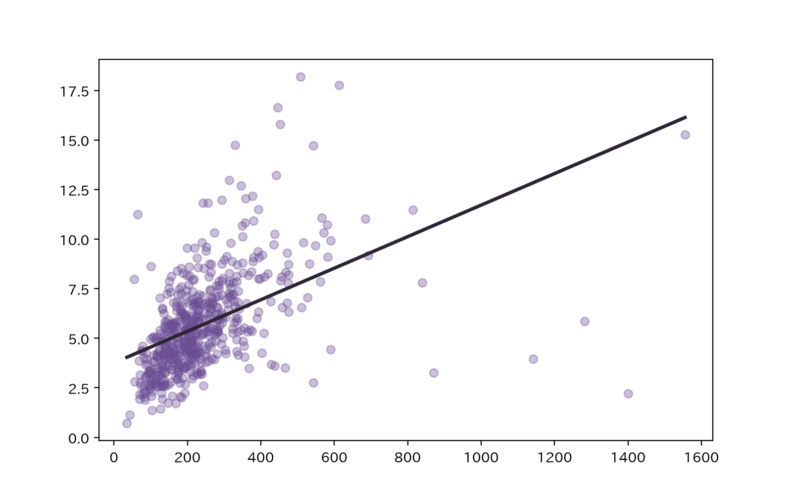

ZENN ARTICLE
「財政力があれば図書館は充実する」は本当か――544自治体の探索的データ分析
人口規模5万人以上自治体の公共図書館データ544件を対象に、図書館サービスに影響を与える要因について、相関・回帰・残差などの観点から比較・分析を行ったもの。
00 － About
新卒で市役所に入庁し、9年間勤務。2024年からは図書館にて図書館システム運用・保守、図書館DX推進、次期システム要件定義等を担当。退職後、データアナリスト・データサイエンティストを目指し、プログラミングスクール「RUNTEQ」にてPythonを中心に学習。統計学・SQLについても独学で学習中。
01 － Analysis
02 － Apps